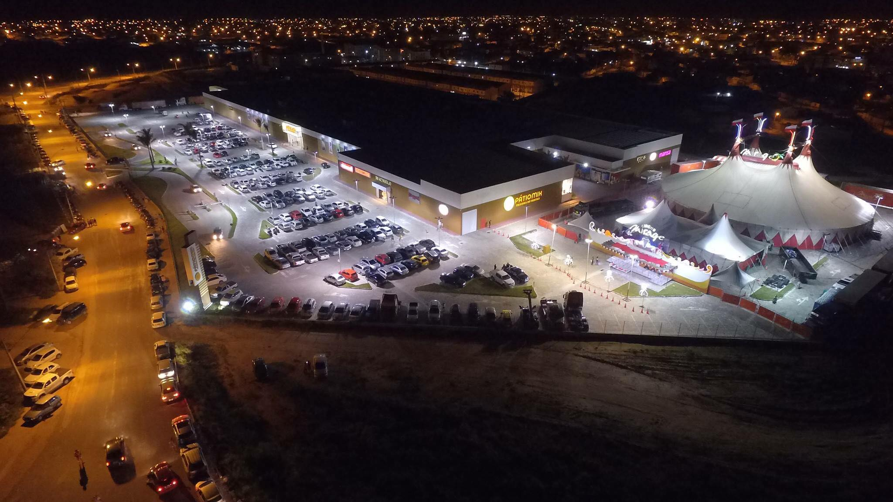
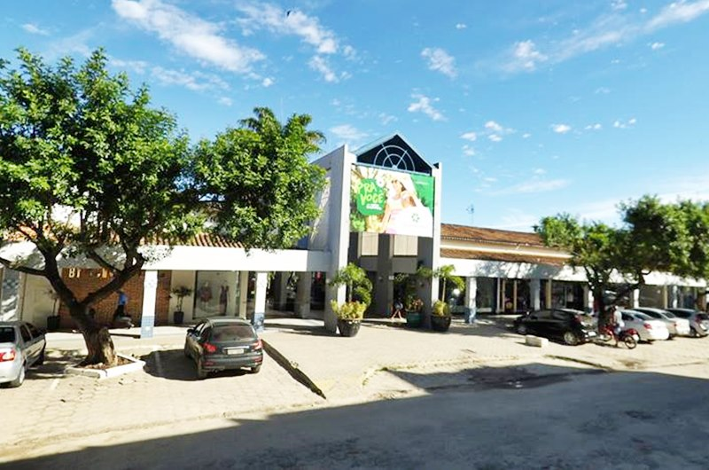
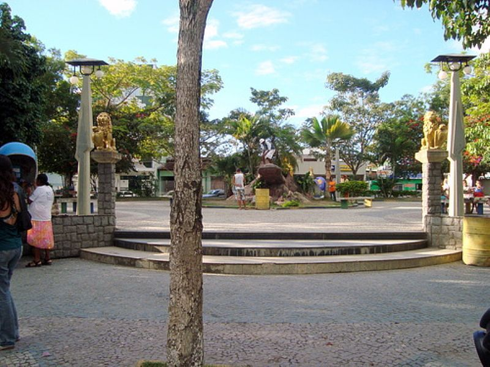
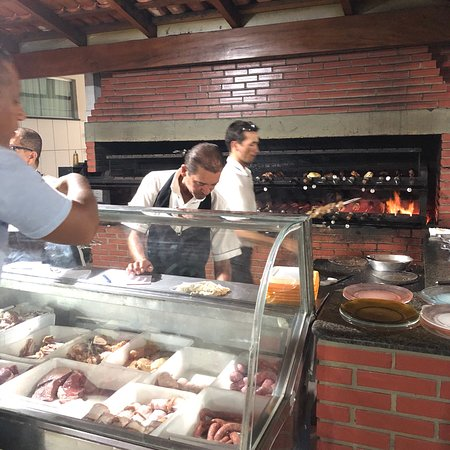
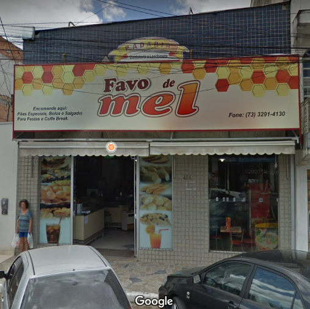
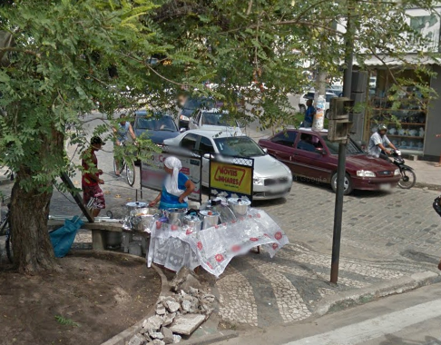

Um grupo de lenhadores, já neste século, à procura de árvores nativas de onde pudessem extrair madeira de lei, se estabeleceu num lugarejo denominado Porta Aberta, proporcionando a formação de uma pequena aglomeração de casas, criando-se assim o povoado denominado por São José do Itanhém. Posteriormente, o povoado que rapidamente se desenvolveu, recebeu o nome de Teixeira de Freitas!





